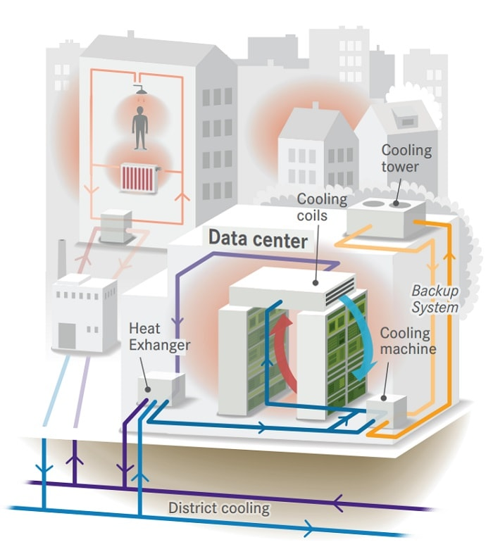

En utilisant des pompes pour capturer et redistribuer la chaleur, le SDP vise à couvrir 10% de la demande totale en chauffage de la ville. Le premier de ces Data centers commencera à fournir de la chaleur au printemps 2021. Stockholm comme de nombreuses villes du nord a un système de chauffage urbain. Ce sont des tuyaux qui transportent de l’eau chaude sous terre et fournissement ainsi de la chaleur aux immeubles.
Pour convaincre les opérateurs de DC d’adhérer à la formule, la ville n’a pas préché le developpement durable et la belle philosophie ecologique mais elle a présenté son projet comme une bonne opportunité de faire affaire pour toutes les parties. La proposition repose sur le marché et non sur des subventions. “Lorsque vous dépendez de subventions, vous dépendez aussi de politiciens et d’élections tous les 4 ans” explique Eric Rylander, chef du SPD pour EXERGI, l’opérateur de refroidissement et de chauffage urbain. A Stockholm, il y a un véritable marché de la chaleur avec un cours du jour. Les Data Centers offrent l’avantage, par rapport à d’autres fournisseurs de chaleur générée, de fonctionner 24h/24. Ils offrent donc une source continue.
Les Data center doivent être situés à proximité de zones densément peuplées pour avoir des clients interessés par cette source de chaleur.
La plupart des entreprises devraient changer le proces d’équipement pour permettre de pomper la chaleur et pour la plupart c’est un risque
Dans certains pays, les fournisseurs d’énergie et de gaz ne sont pas prêts à changer de modèle pour inclure le modèle de la chaleur récupérée.
L’infrastructure peut aussi poser problème. A Stockholm le réseau de chauffage urbain existait déjà. A Londres, il faudrait creuser à 20 ou 30 m du sol pour éviter les réseaux existants tel que le métro.
Enfin l’économie doit suivre: actuellement le retour sur investissement pour installer des pompes à chaleur n’est pas atteint avant 9 ans selon les experts. Mais il est beaucoup plus rapide si la récupération de chaleur est prévue en amont lors d’une nouvelle construction.